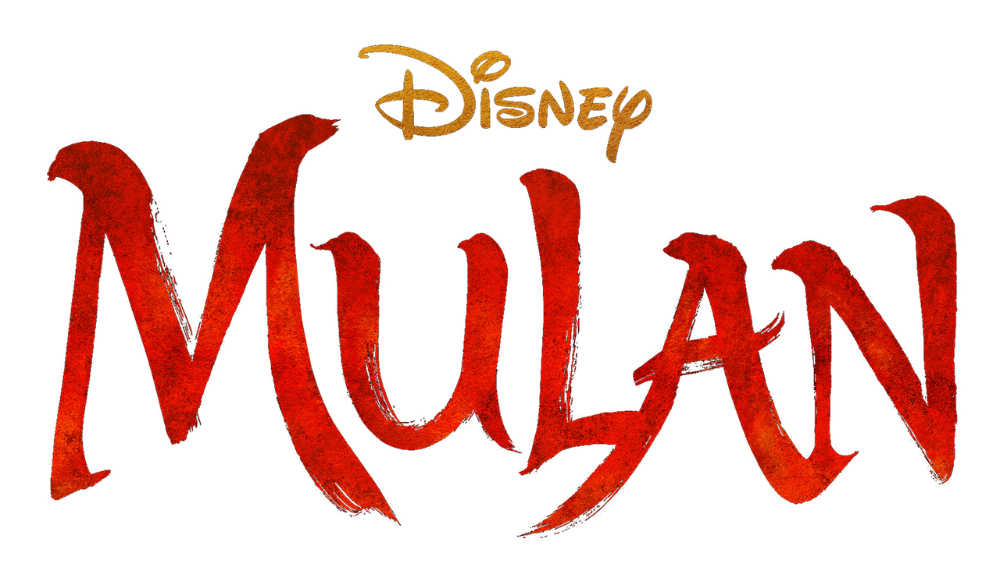

DESCRIÇÃO
Mulan é inspirado numa lenda chinesa Porém, apesar das diferenças, a premissa de Mulan segue a mesma: a jovem assume o lugar de seu pai doente numa guerra, fingindo ser um homem e entrando para o exército imperial, a fim trazer honra para sua nação.